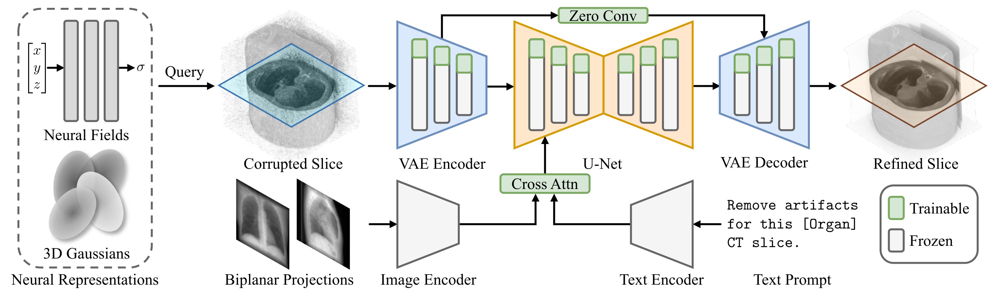
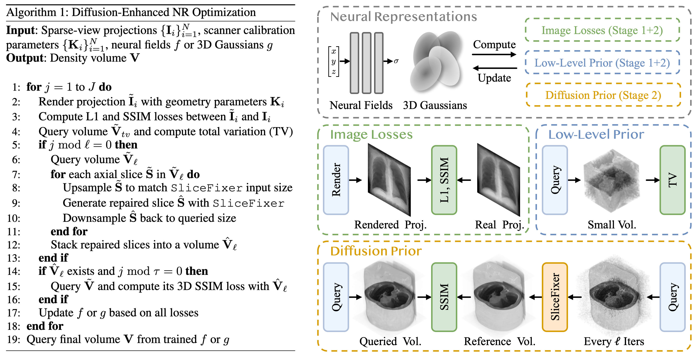
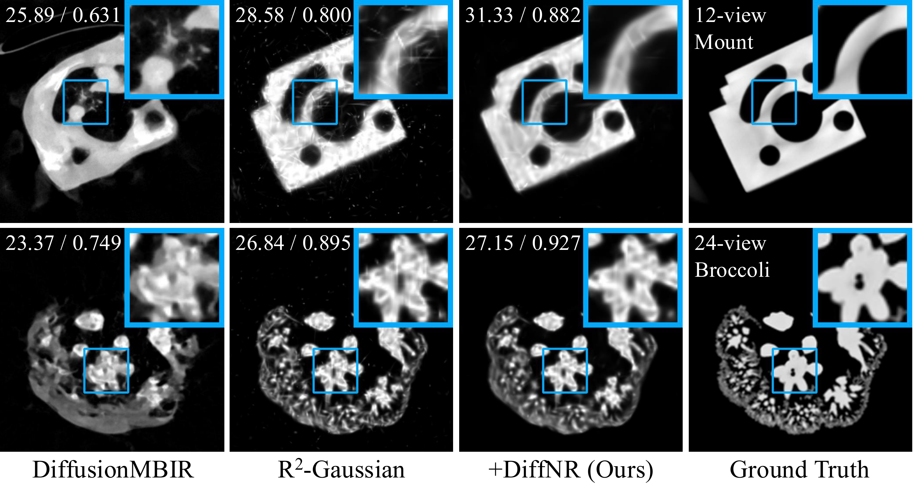
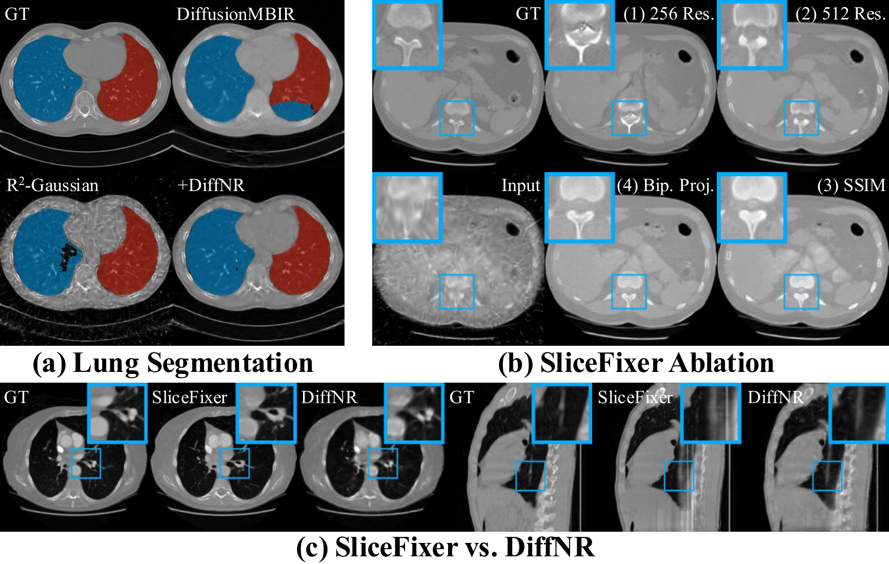

Abstract
Neural representations (NRs), such as neural fields and 3D Gaussians, effectively model volumetric data in computed tomography (CT) but suffer from severe artifacts under sparse-view settings. To address this, we propose DiffNR, a novel framework that enhances NR optimization with diffusion priors. At its core is SliceFixer, a single-step diffusion model designed to correct artifacts in degraded slices. We integrate specialized conditioning layers into the network and develop tailored data curation strategies to support model finetuning. During reconstruction, SliceFixer periodically generates pseudo-reference volumes, providing auxiliary 3D perceptual supervision to fix underconstrained regions. Compared to prior methods that embed CT solvers into time-consuming iterative denoising, our repair-and-augment strategy avoids frequent diffusion model queries, leading to better runtime performance. Extensive experiments show that DiffNR improves PSNR by 3.99 dB on average, generalizes well across domains, and maintains efficient optimization.
Method
SliceFixer
A single-step diffusion model finetuned from SD-Turbo to correct artifacts in NR-reconstructed CT slices, conditioned on biplanar X-ray projections and text prompts.
Data Curation
Tailored strategies including mixed NR types, varied view distributions, and intentional model underfitting to generate diverse artifact patterns for SliceFixer training.
Repair & Augment
SliceFixer periodically generates pseudo-reference volumes with 3D perceptual SSIM supervision, avoiding frequent diffusion queries for efficient optimization.
SliceFixer: Diffusion Model for Slice Repairing
Previous methods in RGB view synthesis repair artifacts at the projection level, which is suboptimal for volumetric reconstruction where errors in penetrable X-ray projections accumulate. SliceFixer instead operates directly on reconstructed CT slices. Built upon SD-Turbo, it takes a corrupted axial slice as input and outputs a refined slice. The model is conditioned on: (1) a text prompt providing semantic guidance (e.g., organ type), and (2) two orthogonal X-ray projections encoded by RAD-DINO, providing global structural cues. We inject LoRA adapters and zero-convolution skip connections for efficient finetuning.

DiffNR: Diffusion-Enhanced NR Optimization
Rather than using SliceFixer as post-processing, we integrate it into the NR optimization loop. The pipeline operates in two stages: Stage 1 optimizes a neural representation (e.g., NAF or R2-Gaussian) using standard image losses (L1 and SSIM) and total variation regularization. In Stage 2, every \(\ell\) iterations, we query a volume from the current model, apply SliceFixer to repair each axial slice, and assemble them into a pseudo-reference volume. This reference volume then provides auxiliary 3D SSIM-based perceptual supervision every \(\tau\) steps. The perceptual loss promotes structural coherence rather than overfitting to potentially hallucinated fine-grained details.

Unlike prior methods that embed CT solvers into time-consuming iterative denoising, our repair-and-augment strategy avoids frequent diffusion model queries, leading to better reconstruction quality and runtime performance.
Results
In-Distribution Performance
We evaluate DiffNR on two datasets: ToothFairy (dental CT) and LUNA16 (chest CT), under challenging 36-, 24-, and 12-view sparse-view settings. DiffNR consistently enhances NR baselines, yielding an average improvement of +2.19 dB for NAF and +5.79 dB for R2-Gaussian, while remaining substantially faster than prior diffusion-based methods.
| Methods | ToothFairy | LUNA16 | Time | ||||
|---|---|---|---|---|---|---|---|
| 36-view | 24-view | 12-view | 36-view | 24-view | 12-view | ||
| Traditional Methods | |||||||
| SART | 27.41 / 0.581 | 27.13 / 0.596 | 25.66 / 0.604 | 22.34 / 0.438 | 21.77 / 0.437 | 19.96 / 0.412 | 1m25s |
| ASD-POCS | 29.65 / 0.775 | 28.34 / 0.765 | 25.91 / 0.721 | 23.93 / 0.661 | 22.63 / 0.616 | 20.04 / 0.512 | 48s |
| Diffusion-Based Iterative Methods | |||||||
| DiffusionMBIR | 33.29 / 0.856 | 30.54 / 0.818 | 26.28 / 0.733 | 29.35 / 0.781 | 27.15 / 0.735 | 23.01 / 0.581 | 11h15m |
| DDS | 32.56 / 0.817 | 31.13 / 0.788 | 28.66 / 0.767 | 26.21 / 0.554 | 25.21 / 0.512 | 23.29 / 0.486 | 16m17s |
| Neural Representation Methods | |||||||
| SAX-NeRF | 28.48 / 0.835 | 27.91 / 0.832 | 26.11 / 0.812 | 23.72 / 0.704 | 23.20 / 0.690 | 21.50 / 0.639 | 4h9m |
| NAF | 28.62 / 0.833 | 28.20 / 0.833 | 26.22 / 0.812 | 23.85 / 0.712 | 23.18 / 0.692 | 21.37 / 0.618 | 7m15s |
| +DiffNR (Ours) | 31.27 / 0.951 | 30.79 / 0.946 | 28.10 / 0.906 | 26.27 / 0.867 | 25.15 / 0.839 | 22.98 / 0.765 | 8m41s |
| R2-Gaussian | 28.56 / 0.695 | 26.36 / 0.634 | 22.63 / 0.537 | 24.11 / 0.577 | 22.06 / 0.497 | 18.32 / 0.364 | 5m52s |
| +DiffNR (Ours) | 33.52 / 0.900 | 32.92 / 0.895 | 29.71 / 0.852 | 28.82 / 0.822 | 27.43 / 0.793 | 24.37 / 0.712 | 11m35s |

DiffNR improves PSNR by 3.99 dB on average across all settings, while previous SOTA DiffusionMBIR takes 11 hours per case vs. DiffNR's ~10 minutes.
Out-of-Distribution Generalization
To evaluate generalization, we apply SliceFixer pretrained on ToothFairy to an OOD dataset containing 18 diverse cases spanning human organs, biological specimens, and artificial objects with real-world captured projections. DiffNR outperforms all baselines by suppressing hallucinations and artifacts, demonstrating that SliceFixer learns generalizable artifact patterns rather than dataset-specific features.

Ablation Study & Analysis
We conduct comprehensive ablation studies to validate the design choices of both SliceFixer and DiffNR. Key findings include: (1) finetuning on 5122 images with up-downsampling outperforms native 2562 resolution; (2) SSIM loss and biplanar projection conditioning each provide significant gains; (3) augmenting slice supervision is more effective than projection-level augmentation for volumetric CT; and (4) integrating SliceFixer into the optimization loop with 3D perceptual SSIM loss is critical to avoid inter-slice jitter and hallucinations from standalone post-processing. We also validate DiffNR on downstream lung segmentation, where it produces substantially more accurate masks.

BibTeX
@inproceedings{su2026diffnr,
title={DiffNR: Diffusion-Enhanced Neural Representation Optimization for Sparse-View 3D Tomographic Reconstruction},
author={Su, Shiyan and Zha, Ruyi and Shi, Danli and Li, Hongdong and Cheng, Xuelian},
booktitle={Proceedings of the AAAI Conference on Artificial Intelligence},
volume={40},
number={11},
pages={9144--9152},
year={2026}
}